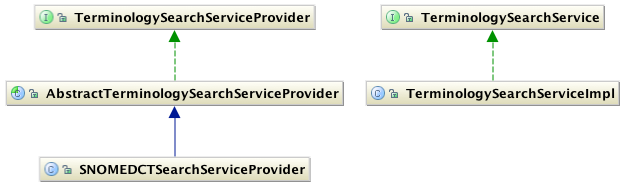

SNOMED CT, Java and MySQL are registered trademarks
This module provides services for searching SNOMED CT for matches against a given term (or phrase) or concept id.
This module provides services for searching SNOMED CT for matches against a given term (or phrase) or concept id.
Given the large size of SNOMED CT's content (approximately 300,000 concepts and 1,000,000 descriptions), a common requirement to lookup a given concept or term in SNOMED CT is to search for matches against the search phrase. While most often searching is performed against terms, it is sometimes useful to search for matches against concept ids. SNOMED CT Search Service provides methods that allow the developer to search SNOMED CT corpus for matches against terms or concept ids. This allows the developer to easily incorporate SNOMED CT search functionality in a given application.
The following figure illustrates the main classes implemented in this module. The methods implemeneted reflect the most commonly features of a search service. The types of search algorithms that can be supported are listed as the enumeration SearchAlgorithm.

The most important classes in this model are TerminologySearchService and TerminologySearchServiceProvider. TerminologySearchServiceProvider handles the initialisation and configuration of the underlying search infrastructure and receives calls from the TerminologySearchService.
| Method Name | Description |
|---|---|
| getMatchesForID | returns all matches for the given concept id as a collection of org.apache.lucene.document.Document objects. |
| getMatchesForTerm | returns all matches for the given search phrase as a collection of org.apache.lucene.document.Document objects. |
| Method Name | Description |
|---|---|
| getMatchesForID | returns all matches for the given concept id as a collection of org.apache.lucene.document.Document objects. |
| getMatchesForTerm | returns all matches for the given search phrase as a collection of org.apache.lucene.document.Document objects. |
| getSupportedAlgorithms | gets the SearchAlgorithms supported by this provider. |
| setMaxResultsSize | sets the maximum number of results returned by this provider. |